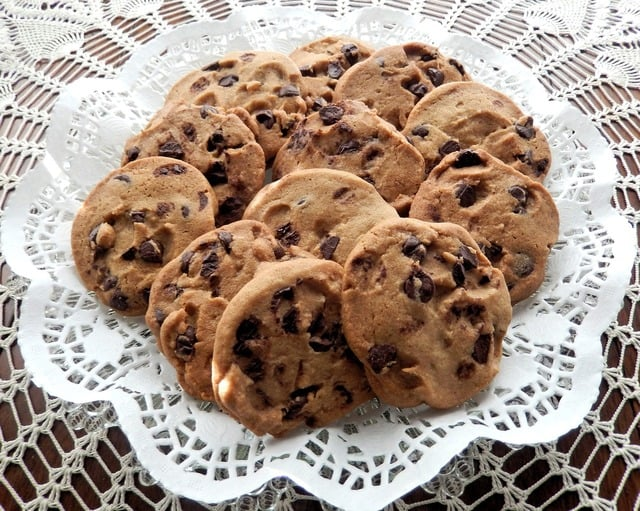

lavender and chocolate, you may ask, but I'm here to tell you-yes, this is what youve been looking for! This recipe takes your traditional chocolate chunk cookie recipe and transforms it into a new experience for your taste buds. As the rich flavors of the chocolate chunk wash over your taste buds you'll notice the calming hints of lavender peeking through. Pair these two distinctive flavors with a pinch of sea salt and you're in for a unique culinary treat.